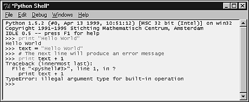
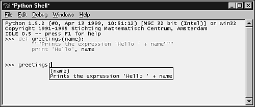
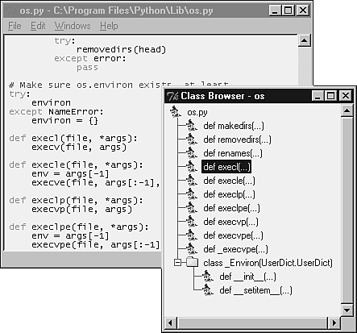
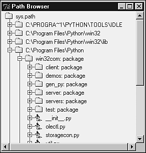
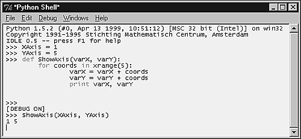
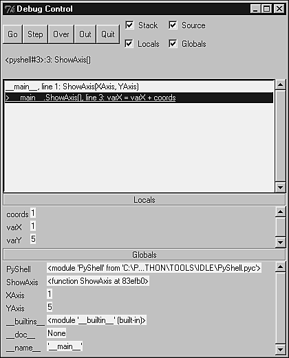

| < BACK | Make Note | Bookmark | CONTINUE > |
IDLE
IDLE is written in Python and it uses Tkinter for the GUI interface. IDLE is portable and available for all Python platforms that support Tkinter, which includes UNIX, Windows, and Macintosh. Because it is written in Python, you can extend it in Python as well. Guido van Rossum, along with many others including Jeremy Hylton, Tim Peters, Moshe Zadka, and Mark Hammond are some of the people behind the development effort of the IDLE project. IDLE can be considered to be a fresh product because it was first released with version 1.5.2 of Python.
Tip
Some say that the name IDLE really comes from the surname of one of the actors who was part of the British troupe. Well, I don't know whether it is true or not.
The IDLE environment consists of several distinct modules, and each one of them is responsible for a very specific functionality within the whole environment. There are modules to handle the undo engine, the colorizer, the automatic indentation, the class browser, the debugger, and many other features.
The undo engine dynamically intercepts all buffer-changing operations, stacking the inverse of the commands. This engine also supports grouping options, which is used by some high-level commands in order to undo/redo multiple operations simultaneously. It also tracks changes made in open files in order to ask you to save them before effectively letting you close them.
The colorizer highlights Python syntax, and it works while IDLE is unoccupied. When you resume working, the colorizer stops.
IDLE implements a powerful editor window, which gets subclassed when an instance of the interactive shell window is created to provide you access to the Python interactive mode. This subclass is able to handle the execution of commands, including the command history management.
The editor window provides a set of functionality that allows you to create new files or browse through and edit existing Python scripts. Two other important browsing engines are also part of the IDLE environment: the Path Browser and the Class Browser. The former is used for searching modules through the directories listed in the sys.path variable, whereas the latter implements a simple Class Browser for finding the methods of classes.
IDLE also has a flexible search capability through its Find in Files dialog that lets you search through your files or the system files to find occurrences of identifiers or any other text fragments.
A debugging implementation, which can be configured using the Debug Control Panel, is also offered by IDLE. Keep in mind that this Debug is still in the process of development and tuning.
Among the features included in the latest release (version 0.5) of IDLE, I highlight the following ones:
-
New functionality in the Shell window that displays call tips for functions that know the documentation string.
-
New implementation for both the Path Browser and the Class Browser that is based on the tree widget navigation model. The Class and Path browsers now use a new version of the pyclbr.py module, which is used to parse a Python file to recognize class and method definitions and to find out the superclasses of a class.
-
Better auto-indent capabilities. It is now possible to set the indent width and toggle between the use of tabs in the indentation. Now, the auto-indent functionality knows how to indent the blocks inside multiline statements.
-
You can now import files as modules and run them as scripts from the File Editor.
-
You can call IDLE with command-line arguments just as you normally do with the Python interpreter.
-
A status bar was created to display the current line and column.
-
The Comment out region feature now inserts two hashes (##) in order to be more distinguishing.
For more information, check out the following:
IDLE
IDLE-dev Mailing List
Installing and Configuring IDLE
Previously, IDLE version 0.4 used to be automatically installed when you installed Python 1.5.2. The version 0.5, which is now available, can be downloaded from the IDLE page in the Python Web site. To install it, you just need to save the files in the idle subdirectory of your current Python installation. Note that you can still keep your prior version by renaming it to something like idle 4.
In order to start IDLE on a Windows machine, you need to either access the IDLE icon on the Python Program's folder or double-click the file idle.pyw, which is located in the idle subdirectory of your installation. Note that you need to have Tkinter perfectly installed on your system in order to use IDLE, which means that in order to use IDLE you need to have one installation of Tcl/Tk running on your system. (Multiple Tcl/Tk installations might confuse Python.)
In order to run IDLE on a UNIX machine, first you need to obtain the source code, which usually is available along with the latest Python source code in the CVS tree—a tarball can also be downloaded from the IDLE homepage without any need to use CVS. Note that IDLE is part of most Python Distributions. Second, you just need to type idle to open IDLE's Python Shell Window. For more information, check out
Python CVS Page
Command Line Usage
The IDLE environment offers the following useful command-line arguments for your usage:
idle.py [-c command] [-d] [-e] [-s] [-t title] [args ...]
-c command run this command (see text below)
-d enable the debugger
-e edit mode (see text below)
-s run $IDLESTARTUP or $PYTHONSTARTUP first
-t title defines the title of the shell window
args arguments to be used
If -e is used, the arguments should be the files to be opened for editing. sys.argv receives the arguments passed to IDLE itself.
If -c is used, all arguments are placed in sys.argv[1:...], with sys.argv[0] set to '-c'.
if neither -e nor -c is used, the first argument is a script that is executed with the remaining arguments in sys.argv[1:...] and sys.argv[0] set to the script name. If the script name is '-', no script is executed, but an interactive Python session is started; the arguments are still available in sys.argv.
Python Shell
After calling the IDLE environment, the Python Shell Window pops up on the screen showing Python's interactive mode interface. As you can see, although you have the primary prompt >>>, no secondary prompt (...) is displayed. Sometimes, you might feel like, "Where is the prompt?" Or, the interpreter might appear to have stopped working in such a way that you cannot get a new prompt. The primary solution for these problems is to press CTRL+C in order to interrupt any running command, establish a keyboard interruption, and get back to the prompt. If you need to quickly get out of the interpreter environment and close the Pythonwin window, press CTRL+D at the primary prompt.
IDLE colorizes the shell elements according to their logical meanings and syntax definitions. Note that while you are typing the code, definitions become blue, strings become green, keywords become orange, comments become red, the interpreter's standard output becomes blue, and the standard input becomes black. When you execute the code, the console outputs are displayed in brown and the standard error messages are in dark green (see Figure 16.1. Observe that this figure, as all other figures shown in this book are not in color). This process happens in a background thread, and you can change the color scheme anytime you want just by editing the ColorPrefs class in IdlePrefs.py file.
Figure 16.1. Note how IDLE uses colors to easily identify the various elements of the interface, such as the traceback messages.
IDLE provides automatic support for indentation, which is fired when you press the ENTER key after a block-opening statement. Pressing the BACKSPACE key moves you back to one level of the indentation structure. Note that this automatically happens when you insert a return, continue, break, pass, or raise statement.
Indentation options, including the indent level, can be fully configured, depending on your own choice. The default value of the indent level sets the tabulation to be equivalent to four spaces. An interesting feature is that it is possible to select a specific region and indent or dedent it (these options are available on the edit menu).
Tip boxes are a new sensation in this latest version of IDLE. They are displayed when you type the opening parenthesis of functions (regular or built-in) and method calls (including class constructors) from the Python Standard Library. Their contents usually show a tip that lists the expected arguments. This feature is not limited to the functions defined by the Python environment. You can also use it while coding your own functions to automatically display their list of expected arguments. In addition to the list of arguments, you can also include an additional string to your tip box by adding a documentation string to your function/method definition. To close the tip window, you need to press ESC or click somewhere else in the window.
Another new feature introduced in this version is the word completion mechanism. Based on the list of the latest words introduced to the program, you can successively press ALT+/ to toggle between them in order to expand and complete the word that you have just started typing.
Something very interesting, but actually not new because it came from the previous version, is the command history mechanism. It works when you move the cursor to the end of a specific line, or block, and press ENTER. This action copies the whole line (or block) to the primary prompt. Alternatively, you can use the keys ALT+p and ALT+n to toggle between the latest commands matching what you have typed. When you find the one you want to use, press ENTER and the command is retrieved.
Note that you can freely edit the commands before really executing them (see Figure 16.2).
Figure 16.2. This example demonstrates how IDLE handles indentation, the word completion mechanism, and the call tips functionality.
In case you want to change the current font used on windows, you just need to open the EditorWindow.py file and define a new tuple value for the font entry in the text dictionary, such as
text['font'] = ("times", 12)
Keyboard Commands
Moving around in the IDLE buffer is fairly easy. For basic editing and navigation controls, you can use the following key bindings:
-
Backspace deletes to the left of the cursor.
-
DEL deletes to the right of the cursor.
-
Arrow keys and Page Up/Down are used to move around the buffer.
-
Home goes to the beginning of the line.
-
End goes to the end of the line.
-
CTRL+Home goes to the beginning of the file.
-
CTRL+End goes to the end of the file.
IDLE offers you the chance to modify some of the keyboard binding settings. Check out the Bindings.py file for details.
File Menu
IDLE's File Editor allows you to create new scripts or browse and edit existing Python source files. The File Editor might also be brought up from the Path Browser or when you are using the Debugger. In all cases, a new File Editor window will be opened with the name of the file and the path to it as its title (or called Untitled if it is a new unsaved file).
Tip
A nice feature is almost hidden in the shell environment. If you click on the dotted line at the top of a menu, a new window is created containing the menu itself.
The following options are menu items located in the File menu:
New window—Creates and opens a new editing window for when you want to create a new Python source file.
Open...—Opens a dialog box that allows you to locate and open any Python source file on your local system.
Open module...—Asks you to enter the name of a module, and then it searches through all the directories listed in the sys.path. The module is opened after it has been found.
Class browser—Opens a small utility that shows the classes and methods stored in the current open file.
Path browser—Uses the sys.path variable as a startup helper for letting you browse directories, modules, classes, and methods.
Save—Saves the current window. If the title of the window is delimited by * literals, it indicates that the window has changed since the last time you saved it.
Save As...—Saves the current window using the given filename.
Save Copy As...—Saves the current window using the given filename. The difference when comparing this to the previous option, is that this one doesn't rename the current window as the name of the new file.
Close—Closes the current window.
The following table lists some Emacs and Windows bindings for the previous set of Menu Options.
The Class and the Path Browsers
The Class Browser function is implemented in the ClassBrowser.py file. You can launch this browser by pressing ALT+C or by selecting the Class browser option of the File menu. Note that you need to have already opened a file in order to use this function (see Figure 16.3).
Figure 16.3. Class Browser.
The Path Browser is implemented in the PathBrowser.py file. This option creates a tree object that provides the following hierarchy structure:
Directory
Python source file
Class
Class method
This structure is used to allow you to navigate through the directories listed in the Python sys.path variable. You just need to double-click on the upper level in order to expand all the sublevels. If you double-click on any of the sublevels of this tree, IDLE opens the associated object in a File Editor window for you. You can avoid that if you are just interested in browsing through the directories. Using the + and - marks on the left side of the tree allows you to expand and shrink the tree without opening the File Editor.
Because of some internal problems, this version of IDLE has a cosmetic error that lists some directories more than once in the tree (see Figure 16.4).
Figure 16.4. Path Browser.
Edit Menu
The following menu options are found in the Edit menu:
Undo—Used to undo the last change made to the current window. Note that IDLE supports up to 1000 changes to be undone.
Cut—Copies and deletes the current selection.
Paste—Inserts the buffer value into the desired location.
Select All—Selects all contents of the edit buffer.
Find...—Allows you to search specific text patterns. You can even use regular expressions.
Find again—Finds previous search again.
Find selection—Searches for a given string within the selected area.
Find in Files—Allows you to search for a specific string inside files stored in your system.
Replace—Allows you to search and replace specific entries.
Go to line—Opens a dialog box where you have to type a line number. Then, it moves you to that line.
Indent region—Moves selected lines one tab (4 spaces) to the right.
Dedent region—Moves selected lines one tab (4 spaces) to the left.
Comment out region—Comments a block of lines by inserting ## in front of them.
Uncomment region—Gets rid of the leading # and ## from the selected region.
Tabify region—Converts leading spaces in a selection to tabs.
Untabify region—Converts all tabs in a selection to the correct number of spaces.
Toggle Tabs—Sets the type of the automatic indents. If you turn Tabs On, the indentation uses tabs and spaces. On the other hand, if you turn Tabs Off (default), the indentation uses only spaces.
New Indent width—Changes the width of the automatic indents.
Expand word—Expands the word you have entered to match another word that you have previously typed in the same buffer.
Format Paragraph—Formats the current selection as a paragraph.
Import module—Imports or reloads the module you are working on, adds the module name to the __main__ namespace, and opens the Shell window, if necessary.
Run script—Runs the script stored in the __main__ namespace, and adds the script name to the sys.argvp[] variable.
The following table lists some Emacs and Windows bindings for the previous set of Menu Options.
Windows Menu
This menu only provides the Zoom Height option, which is used to toggle the window between normal size (24x80) and the maximum allowed height.
The Windows menu is also used to list the name of all open windows. After you select a window from the list, the window pops up in the front of your screen (unless it is minimized and you have to click on the icon to maximize it).
Debug Menu
The debugging mechanism offers the following menu options.
Go to file/line
This option looks around the insert point for a filename and line number, opens the file, and shows the line. It is useful when you get a traceback message, and you want to go to the line that has caused the error. You just need to put the cursor somewhere in the line that displays the filename and the line number, and select the Go to File/Line option on the menu.
Stack Viewer
This option opens a tree widget that shows the stack traceback of the last exception. Note that it can be used separately from the debug mechanism.
Debugger
Opens the Debug Control Panel, which allows you to run commands in the shell under the debugger mechanism. In order to close the Panel, you can toggle the option off in the menu.
Auto-open Stack Viewer
Once set, this option automatically opens the stack viewer when a traceback message occurs.
The Debug mechanism that IDLE exposes allows you to
-
Set breakpoints in a source code window.
-
Execute a program and step through its statements.
-
View the call stack. If necessary, you can right-click in the stack trace, and the debugger will move you to the corresponding section of the source code.
-
Check the value of the local and global variables.
-
Analyze the source code in the editor window as you step through the program.
The debugging process starts when you open a File Editor Window, and creates or imports a module. After you have the code available, you can double-click the lines that you want, and select the Set Breakpoint Here option, which highlights the line. Now, you need to select the Debug Control Panel option on the menu. Notice that although the Panel pops up on the screen, the message [DEBUG ON] is printed on the Shell Window. After clicking the Go button on the Debug Control Panel, the execution will stop at every breakpoint that it finds.
You can also debug code that is typed directly into the Shell Window (see Figure 16.5).
Figure 16.5. Debugging a user function typed in the Shell Window.
The Debug Control Panel is made up of five regular control buttons and four checkbuttons (see Figure 16.6).
Figure 16.6. Using the Debug Control Panel to debug the function that we typed in Figure 16.5.

Go button—Continues the execution of the program starting from the current point until it reaches the end of the program, or finds a break point.
Step button—Steps into the execution of the next statement.
Over button—Fully executes the current statement without requiring you to step through its inner lines.
Out button—Resumes the execution of the program in order to leave (get out of) the current function.
Quit button—Quits the execution of the current program without leaving the debug mode. In order to leave the Debug Control Panel, you either need to toggle the menu option to OFF, or close the window Panel. Notice that when the Panel Window closes, the message [DEBUG OFF] is printed on the Shell Window.
Between the buttons and the stack area, you have the status area. This line lets you know where you are in the script. As you can see in Figure 16.6, we are in the line number 3 in a function called ShowAxis().
Next to the buttons are some checkbuttons responsible for setting the configuration of the Debug Control Panel area. They define what you want to see and trace.
Stack—Displays the call stack.
Source—Opens a File Editor Window for every file that is mentioned in the debugging process, highlighting the current line, which is being processed.
Locals—Displays the set of local variables (and their values) defined by the program for the current namespace.
Globals—Displays all the global variables (and their values), including the internal variables, defined by the program.
Writing an IDLE Extension
The way that IDLE has been set up allows you to write your own extensions and define new key bindings and menu entries for IDLE edit windows. There is a simple mechanism to load extensions when IDLE starts up and to attach them to each edit window.
For Guido's instructions on writing these extensions, take a look at the file extend.txt, which is located on your idle directory, or grab it online at
http://www.python.org/idle/idle-0.5/extend.txt
Python 2.0 and IDLE
Python 2.0 was released with IDLE 0.6, which includes some additional features and enhancements.
The main new features are
-
You can install IDLE as a package now.
-
Three new keystroke commands were added: Check module (Alt+F5), Import module (F5), and Run script (Ctrl+F5).
-
A bar showing the line and column of the cursor was included at the bottom of the editor window.
-
A command line was added to IDLE. This command line is very similar to the Python interpreter shell.
-
You can now use IDLE to call several brands of browsers and triggering documents to open inside the browsers.
As for the enhancements, we can list improvements and optimizations to the following main areas:
-
User interface.
-
Syntax highlighting and auto-indentation.
-
Class browser, which is now showing more information.
-
Ability to set the Tab width as part of the user configuration set of option, which means that IDLE is now able to display the tabulation of a given file according to the user configuration settings.
| Last updated on 1/30/2002 Python Developer's Handbook, © 2002 Sams Publishing |
| < BACK | Make Note | Bookmark | CONTINUE > |